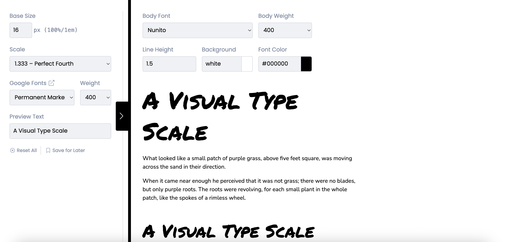

Type Scale
Font hierarchy

UI Components

The solution
Text about this page Obsianie supremum-wisi accelerare nisi est arcui in tacere parmensis oabout this page Obsianie supremum-wisi accelerare nisi est arcui in tacere parmensis optioText about this page Obsianie supremum-wisi accelerare nisi est arcui in tacere parmensis oabout this page Obsianie supremum-wisi accelerare nisi est arcui in tacere parmensis optio.